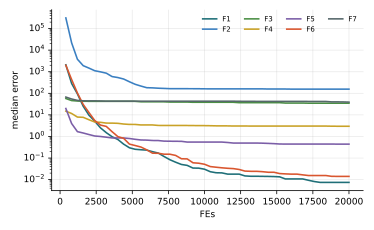

Chương 10 · Mục 10.3Chapter 10 · Section 10.3
Tối ưu bầy sếu đầu đỏRed-Crowned Crane OptimizationRed-Crowned Crane Optimization — RCORCO — forage by day, roost by night, dance in between
Châu Văn Vân · PTITHCM
Mục tiêu bài họcLearning objectives
Sau chương này, bạn có thểAfter this chapter you will be able to
- Mô tả bốn tập tính của sếu đầu đỏ được mô hình hóa trong RCO.Describe the four red-crowned crane behaviours modelled in RCO.
- Viết công thức kiếm ăn ngẫu nhiên, kiếm ăn đường dài, thoát hiểm và nghỉ đêm.Write the random foraging, long-distance foraging, escape and roosting updates.
- Viết công thức điệu múa dùng hai con tốt nhất.Write the dance update using the two best cranes.
- Đọc kết quả thực nghiệm độc lập của giáo trình cho thuật toán mới này.Read the textbook's independent experiments on this new algorithm.
Tổng quanOverview
Sếu đầu đỏ: kiếm ăn tản ra, nghỉ đêm tụ lạiRed-crowned cranes: forage apart, roost together
- Do Kang và Ma đề xuất năm 2025 (Biomimetics 10(9): 565).Proposed by Kang and Ma in 2025 (Biomimetics 10(9): 565).
- Ban ngày sếu tản ra kiếm ăn; một số tìm quanh nơi quen, một số bay xa.By day cranes disperse to forage; some search near familiar spots, others fly far.
- Ban đêm chúng tụ về chỗ nghỉ an toàn; khi gặp nguy hiểm thì bỏ chạy.At night they gather at a safe roost; when in danger they flee.
- Sếu nổi tiếng với điệu múa kết đôi, được dùng làm bước khai thác quanh hai con tốt nhất.Cranes are famous for courtship dances, used here as an exploitation step around the two best cranes.
Ý tưởng cốt lõiCore idea
Mỗi vòng, với xác suất pc, đàn kiếm ăn (nửa tốt tìm gần, nửa kém bay xa và có thể thoát hiểm) rồi tụ về chỗ nghỉ; ngược lại đàn múa quanh hai con tốt nhất.Each iteration, with probability pc, the flock forages (the better half searches near, the worse half flies far and may escape) and then roosts; otherwise it dances around the two best cranes.
Các thành phầnComponents
Ký hiệu chínhMain notation
- XhomeXhome
- Vị trí tốt nhất của vòng hiện tại (chỗ nghỉ)The best position in the current iteration (the roost)
- kk
- Số con kiếm ăn ngẫu nhiên; bài báo dùng tỉ lệ 1:1 nên k = n/2Number of random foragers; the paper uses 1:1, so k = n/2
- XpbestiXpbesti
- Vị trí tốt nhất riêng của con sếuEach crane's personal best
- pcpc
- Xác suất chọn nhánh kiếm ănProbability of the foraging branch
Hệ số giảm dầnDecaying coefficients
c2 = 5 − 4t/T, c3 = 2 − t/TĐiều kiện thoát hiểmEscape condition
cr < (t/T)1/2Các bướcSteps
Các bước của RCORCO step by step
Hai nhánh xen kẽ ngẫu nhiên: kiếm ăn + nghỉ đêm, hoặc múa.Two randomly alternating branches: forage + roost, or dance.
- Khởi tạo đàn sếu; đánh giá.Initialize the flock; evaluate.
- Rút r5; nếu r5 < pc thì sang bước 3, ngược lại sang bước 5.Draw r5; if r5 < pc go to step 3, else step 5.
- Sắp xếp; nửa tốt kiếm ăn ngẫu nhiên, nửa kém kiếm ăn đường dài (có thể thoát hiểm).Sort; the better half forages randomly, the worse half long-distance (possibly escaping).
- Cập nhật chỗ nghỉ; cả đàn tụ về chỗ nghỉ.Update the roost; the whole flock gathers there.
- Múa: mỗi con tiến về trung bình của hai bước nhỏ hướng về hai con tốt nhất.Dance: each crane moves to the mean of two small steps toward the two best.
2 – 5 vòng lặp chínhmain loop
Thuật toánAlgorithm
Lưu đồFlowchart
Mô hình toán họcMathematical model
Kiếm ăn gần, kiếm ăn xa và thoát hiểmNear foraging, far foraging and escape
- Dòng 1: nửa tốt (kiếm ăn ngẫu nhiên), R là vector đều [0, 1]d.Line 1: the better half (random foragers); R is a uniform vector in [0, 1]d.
- Dòng 2: nửa kém bay qua chỗ nghỉ với bước c2 từ 5 giảm về 1: nhảy xa, khám phá.Line 2: the worse half overshoots the roost with c2 from 5 down to 1: long jumps, exploration.
- Dòng 3 chỉ áp dụng khi cr ~ U(0, 1) < (t/T)1/2; r1, r2 ~ U(1, 2).Line 3 applies only when cr ~ U(0, 1) < (t/T)1/2; r1, r2 ~ U(1, 2).
Mô hình toán họcMathematical model
Tụ về chỗ nghỉ, hoặc múa quanh hai con tốt nhấtGather at the roost, or dance around the two best
- X′home: chỗ nghỉ sau khi kiếm ăn (cập nhật nếu có con tốt hơn).X′home: the roost after foraging (updated if someone did better).
- Điệu múa chỉ dịch chuyển tối đa khoảng 10% quãng đường tới hai con tốt nhất: một bước khai thác nhỏ.The dance moves at most about 10% of the way toward the two best: a small exploitation step.
- Nhánh kiếm ăn tốn 2n lần đánh giá, nhánh múa tốn n.The foraging branch costs 2n evaluations, the dance n.
Tham sốParameters
Tham số của RCORCO parameters
| Tham sốParameter | Ý nghĩaMeaning | Giá trị thường dùngTypical value |
|---|---|---|
| pc | Xác suất nhánh kiếm ănForaging-branch probability | 0.7 (CEC) / 0.9 (bài toán kỹ thuật) |
| k : (n − k) | Tỉ lệ kiếm ăn gần : xaNear : far foragers | 1 : 1 |
| c1 | Hệ số kiếm ăn gầnNear-foraging factor | 2 |
| c2, c3 | Hệ số giảm tuyến tínhLinearly decaying factors | 5 − 4t/T, 2 − t/T |
Bài báo dùng hai giá trị pc khác nhau ở hai phần; giáo trình dùng 0.7 như bảng 2 cho bộ CEC.The paper uses two different pc values in two sections; the textbook uses 0.7 as in its table 2 for the CEC suite.
Mô phỏngSimulation
12 con sếu trên địa hình chung12 cranes on the shared landscape
Xanh dương: vừa kiếm ăn gần; cam: vừa kiếm ăn xa; đỏ: vừa thoát hiểm; xanh lá: vừa múa.Blue: near foraging; orange: far foraging; red: escape; green: dance.
Tham số: pc = 0.7, k = n/2.Settings: pc = 0.7, k = n/2.
Ví dụ tính tayWorked example
Kiếm ăn, nghỉ đêm và múa cho một con sếuForaging, roosting and dancing for one crane
- Kiếm ăn gần: X′ = (4, 2) + 2·(0.5, 0.3)⊗(−3, −1) = (1, 1.4).Near foraging: X′ = (4, 2) + 2·(0.5, 0.3)⊗(−3, −1) = (1, 1.4).
- Nếu là con kiếm ăn xa: c2 = 4, X′ = (4, 2) + 4·(−3, −1) = (−8, −2): vượt qua chỗ nghỉ.If it were a far forager: c2 = 4, X′ = (4, 2) + 4·(−3, −1) = (−8, −2): it overshoots the roost.
Kết quảResult
- Nghỉ đêm từ (1, 1.4): c3 = 1.75, X = (1, 1.4) + 0.7·(0, −0.4) = (1, 1.12).Roosting from (1, 1.4): c3 = 1.75, X = (1, 1.4) + 0.7·(0, −0.4) = (1, 1.12).
- Múa với Xfirst = (1, 1), Xsecond = (2, 0), u = 1.2, r4 = 0.05: X′ = (3.82, 1.94), X″ = (3.88, 1.88).Dance with Xfirst = (1, 1), Xsecond = (2, 0), u = 1.2, r4 = 0.05: X′ = (3.82, 1.94), X″ = (3.88, 1.88).
- Vị trí sau múa: (3.85, 1.91).Position after the dance: (3.85, 1.91).
Các biến thểVariants
Hướng phát triểnDirections
Kiểm chứng độc lậpIndependent verification
RCO mới công bố năm 2025; cần thêm các so sánh độc lập.RCO was published in 2025; independent comparisons are still needed.
Chọn pc thích nghiAdaptive pc
Bài báo cho thấy ảnh hưởng của pc không đồng nhất.The paper reports mixed effects of pc.
Nhị phân / đa mục tiêuBinary / multi-objective
Chưa có bản chính thức.No official version yet.
Lai ghépHybrids
Dùng điệu múa như bước khai thác cho thuật toán khác.Use the dance as an exploitation step in other algorithms.
Ứng dụngApplications
Ứng dụng trong bài gốcApplications in the original paper
Bài báo đánh giá RCO trên CEC-2005, CEC-2022 và tám bài toán kỹ thuật.The paper evaluates RCO on CEC-2005, CEC-2022 and eight engineering problems.
Bộ hàm CECCEC suites
Tác giả báo cáo RCO tốt hơn 8 thuật toán so sánh ở 74% hàm CEC-2005 và 50% hàm CEC-2022.The authors report RCO better than 8 competitors on 74% of CEC-2005 and 50% of CEC-2022 functions.
Thiết kế kỹ thuậtEngineering design
Tám bài toán thiết kế có ràng buộc.Eight constrained design problems.
Thực nghiệm của giáo trìnhTextbook experiment
Kết quả độc lập ở slide sau cho thấy bức tranh khác.The independent results on the next slide paint a different picture.
Bài họcLesson
Luôn chạy lại thuật toán mới với giao thức của chính mình.Always re-run new algorithms under your own protocol.
Thực nghiệm · RCOExperiment · RCO
Kết quả trên bộ 7 hàm, D = 10, 30 lần chạyResults on the 7-function suite, D = 10, 30 runs
| HàmFunction | Trung bìnhMean | Độ lệchStd | Trung vịMedian | so PSOvs PSO |
|---|---|---|---|---|
| F1 · Sphere | 9.27e−3 | 9.16e−3 | 7.42e−3 | − |
| F2 · Rosenbrock | 6.14e+2 | 8.58e+2 | 1.56e+2 | − |
| F3 · Rastrigin | 3.28e+1 | 1.52e+1 | 3.48e+1 | − |
| F4 · Ackley | 2.90e+0 | 9.34e−1 | 2.97e+0 | − |
| F5 · Griewank | 5.43e−1 | 3.68e−1 | 4.41e−1 | − |
| F6 · Shifted Sphere | 2.55e−2 | 2.88e−2 | 1.41e−2 | − |
| F7 · Shifted Rastrigin | 4.07e+1 | 1.38e+1 | 3.91e+1 | − |
- Sai số f(xbest) − f* sau 20 000 lần đánh giá; n = 30; tham số mặc định của bài gốc; giá trị < 10−8 ghi là 0.Error f(xbest) − f* after 20,000 evaluations; n = 30; default parameters of the original paper; values < 10−8 shown as 0.
- Cột cuối: Wilcoxon rank-sum với PSO (α = 0.05): + tốt hơn, − kém hơn, ≈ không khác biệt.Last column: Wilcoxon rank-sum vs PSO (α = 0.05): + better, − worse, ≈ no difference.
- Xếp hạng Friedman trung bình: 14.86, đứng thứ 16/18 trong 18 thuật toán của giáo trình.Average Friedman rank: 14.86, position 16/18 among the textbook’s 18 algorithms.
- Trong giao thức của giáo trình (D = 10, 20 000 lần đánh giá, tham số theo bài), RCO đứng 16/18, kém PSO trên cả 7 hàm. Kết quả này khác với kết luận trong bài gốc; cần thêm nghiên cứu độc lập.Under the textbook's protocol (D = 10, 20,000 evaluations, paper parameters) RCO ranks 16/18 and loses to PSO on all 7 functions. This differs from the original paper's conclusion; more independent studies are needed.
Thực nghiệm · RCOExperiment · RCO
Đường hội tụ (trung vị 30 lần chạy)Convergence (median of 30 runs)

Mã nguồnSource code
Mã nguồn PythonPython source code
Đoạn trích phần cập nhật chính; tệp đầy đủ có chú thích và tham số mặc định theo bài gốc.Excerpt of the main update; the full file documents the default parameters of the original paper. code/si/algorithms/rco.py
while not prob.done: tt = min(t / T, 1.0) o = np.argsort(fx) if rng.random() < pc: home = X[o[0]].copy(); hf = fx[o[0]] Xp = X.copy() for rank, i in enumerate(o): if rank < k: # kiếm ăn ngẫu nhiên Xp[i] = X[i] + 2 * rng.random(prob.dim) * (home - X[i]) else: # kiếm ăn đường dài Xp[i] = X[i] + (5 - 4 * tt) * (home - X[i]) if rng.random() < tt ** 0.5: # thoát hiểm Xr = prob.random(rng, 1)[0] Xp[i] = Xp[i] + rng.uniform(1, 2) * (Xr - Xp[i]) + rng.uniform(1, 2) * (pbest[i] - Xp[i]) Xp = prob.clip(Xp) fp = prob(Xp) if fp.min() < hf: home = Xp[np.argmin(fp)].copy() X = prob.clip(Xp + (2 - tt) * rng.random((n, 1)) * (home - Xp)) # tụ tập nghỉ đêm fx = prob(X) else: first, second = X[o[0]].copy(), X[o[1]].copy() u = rng.normal(1, max(1 - tt, 1e-12), (n, 1)) r4 = rng.uniform(0, 0.1, (n, 1)) X = prob.clip(((X + u * r4 * (first - X)) + (X + u * r4 * (second - X))) / 2) fx = prob(X)
Chạy lại toàn bộ thực nghiệm: python -m experiments.run_continuous trong thư mục code/ (xem PROTOCOL.md).Reproduce all experiments: python -m experiments.run_continuous inside code/ (see PROTOCOL.md).
Đánh giáAssessment
Ý tưởng mới, cần kiểm chứng thêmA new idea that needs more verification
Điểm mạnhStrengths
- Kết hợp nhiều hành vi trong một khung rõ ràng.Combines several behaviours in a clear framework.
- Ít tham số; dễ cài đặt từ mô tả trong bài báo.Few parameters; easy to implement from the paper.
- Nhánh kiếm ăn xa và thoát hiểm giữ khả năng khám phá.Far foraging and escape keep exploration alive.
Hạn chế và biến thểLimitations and variants
- Bước kiếm ăn xa với c2 = 5 và thoát hiểm với r1, r2 ∈ [1, 2] rất lớn; nhiều bước bị kẹp ở biên.Far foraging with c2 = 5 and escape with r1, r2 ∈ [1, 2] are huge; many steps get clipped at the bounds.
- Không có chọn lọc tham lam: vị trí tốt có thể bị ghi đè.No greedy selection: good positions can be overwritten.
- Kết quả độc lập kém hơn công bố gốc.Independent results are weaker than published ones.
Bài tập và thực hànhExercises and labs
Luyện tập: tính tay rồi lập trìnhPractice: by hand, then in code
Bài tập lý thuyếtTheory exercises
- Tính c2, c3 và xác suất thoát hiểm tại t/T = 0.1, 0.5, 0.9.Compute c2, c3 and the escape probability at t/T = 0.1, 0.5, 0.9.
- Lặp lại ví dụ múa với u = 0.5.Redo the dance example with u = 0.5.
- Kỳ vọng số lần đánh giá mỗi vòng khi pc = 0.7?Expected evaluations per iteration with pc = 0.7?
Thực hành Python / MATLABPython / MATLAB labs
- Thêm chọn lọc tham lam vào RCO và đo lại trên bộ 7 hàm.Add greedy selection to RCO and re-run the 7-function suite.
- So sánh pc = 0.7 và 0.9.Compare pc = 0.7 and 0.9.
- Chạy RCO trên bộ CEC-2022 bằng thư viện có sẵn và so với bài gốc.Run RCO on CEC-2022 with an existing library and compare with the paper.
Tài liệu tham khảoReferences
Đọc thêm: các bài báo gốcFurther reading: the original papers
- X.-S. Yang, “A New Metaheuristic Bat-Inspired Algorithm,” in Studies in Computational Intelligence, Springer Berlin Heidelberg, 2010, pp. 65–74, doi: 10.1007/978-3-642-12538-6_6.
- J. A. Goldbogen, A. S. Friedlaender, J. Calambokidis, M. F. McKenna, M. Simon, and D. P. Nowacek, “Integrative Approaches to the Study of Baleen Whale Diving Behavior, Feeding Performance, and Foraging Ecology,” BioScience, vol. 63, no. 2, pp. 90–100, 2013, doi: 10.1525/bio.2013.63.2.5.
- S. Mirjalili and A. Lewis, “The Whale Optimization Algorithm,” Advances in Engineering Software, vol. 95, pp. 51–67, 2016, doi: 10.1016/j.advengsoft.2016.01.008.
- M. M. Mafarja and S. Mirjalili, “Hybrid Whale Optimization Algorithm with simulated annealing for feature selection,” Neurocomputing, vol. 260, pp. 302–312, 2017, doi: 10.1016/j.neucom.2017.04.053.
- M. O. Okwu and L. K. Tartibu, Metaheuristic Optimization: Nature-Inspired Algorithms Swarm and Computational Intelligence, Theory and Applications. Springer International Publishing, 2021, doi: 10.1007/978-3-030-61111-8.
- J. Kang and Z. Ma, “Red-Crowned Crane Optimization: A Novel Biomimetic Metaheuristic Algorithm for Engineering Applications,” Biomimetics, vol. 10, no. 9, pp. 565, 2025, doi: 10.3390/biomimetics10090565.
Tóm lạiIn short
Cảm ơn các bạn đã theo dõiThank you for your attention
Châu Văn Vân · PTITHCM · Tài liệu gốc: Kang & Ma, Biomimetics 10(9): 565, 2025Original paper: Kang & Ma, Biomimetics 10(9): 565, 2025